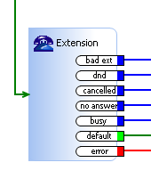

|
|
ActionStep Extension Description
ActionStep for transfering a call to a given local extension. Has the following exit paths for further call handling:
The default path is taken after the extension called is hung up. This can be used for post call processing.  Attributes
|